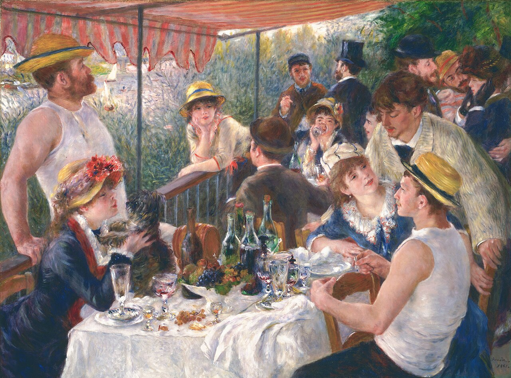

人間・心理 Human & Mind初対面なのに、話しやすい人がいるのはなぜ？
初めて会ったのに、なぜか話が弾む相手がいますが、その差は顔や雰囲気よりも、返事までの一瞬の「間」や質問のしかたにあるようです。心理学の実験を、棒グラフと図でたどります。話しやすい人は、何をしているのでしょう？
2026.10.23 UP 約5分で読める 文：SOMOSOMO編集部
写真（イメージ）：Coffee Talks／Joshua Ness（2017年、CC0）
アメリカ北東部、ニューハンプシャー州のダートマス大学。2022年に発表された研究で、初対面の学生どうしが1対1で10分ずつ、自由におしゃべりをしました。相手を替えながら1人10回、参加したのは66人です。本人はあとで録画を見返し、その瞬間ごとに「どれくらい通じ合っていたか」を記録しました。
同じ10分でも、話が弾む相手と、なぜかぎこちない相手がいる。誰にでも覚えがあるはずです。初対面なのに話しやすい人は、いったい何がちがうのでしょうか。
In a word
話しやすさを生むのは、顔や雰囲気よりも、会話の中の小さな合図 だと考えられています。すぐに返ってくる返事、話を深める質問、少しずつの打ち明け合い。どれも相手に「ちゃんと聞いている」 と伝える合図です。
01
The First Glance
印象は0.1秒でできる。でも、それで決まりではない
まず「見た目」の力を確かめておきましょう。2006年、アメリカのプリンストン大学のジャニーン・ウィリスとアレクサンダー・トドロフは、知らない人の顔写真を、わずか0.1秒だけ見せる実験を行いました。見た人には「信頼できそうか」「好感がもてるか」などを判断してもらいました。
その判断は、時間をかけて顔を見た別の人たちの判断と、よく一致していました。とくに一致が強かったのは「信頼できそうか」です。見る時間を0.5秒、1秒とのばしても、一致はほとんど変わりませんでした。変わったのは主に判断への自信 で、評価はやや厳しくなりました。

顔の印象は、一瞬でできる ルノワールが描いた、セーヌ川沿いのレストランのテラス。一人ひとりの顔を見ると、言葉を交わす前から「優しそう」「気むずかしそう」といった印象が浮かんできませんか。写真：舟遊びの昼食（Luncheon of the Boating Party） ／ピエール＝オーギュスト・ルノワール（1880〜1881年、パブリックドメイン）
ただし、この実験が示したのは「人どうしの印象がそろう」ことです。その印象が当たっているかどうかは、調べていません。 顔の印象は一瞬でできますが、人柄を言い当てているとは限らないのです。
「人は見た目が9割」の根拠によく引かれる「メラビアンの法則（言葉7%・声38%・表情55%）」は、気持ちを表す言葉と声や表情が食い違ったときの実験から出た数字です。会話全般に当てはめるのは誤用 だと、本人も注意しています。第一印象は会話の入口にすぎません。
02
The Gap Between Turns
話しやすさは、返事までの「0.2秒」に出る
会話では、話し手が交代するたびに、ほんの短い「間」が生まれます。2009年、研究者のターニャ・スタイヴァースらは、世界の10の言語の会話を録音し、「はい」か「いいえ」で答える質問から返事までの時間を測りました。
すると、どの言語でも、話が重なるのを避けつつ、沈黙をできるだけ短くしていることがわかりました。10言語全体の平均は約0.2秒。 調べた中でいちばん速かったのは日本語でした。言語ごとに差はあっても、どの言語の平均も0.5秒に届かない短さです。
Fig.01 質問から返事までの「間」の平均
日本語 0.007秒
10言語全体の平均 0.208秒
イタリア語 0.310秒
デンマーク語 0.469秒
見どころは、ほぼ線にしか見えないほど短い、赤い日本語の棒。日本語の会話は、平均するとほとんど間をあけずに答えていました。ただしこれは言語ごとの習慣の差で、話しやすさの差ではありません。効いてくるのは、同じ会話の中での速さのちがいです。数字は Stivers ほかの論文（2009年）によります。
この一瞬の間が、話しやすさと関係していることを示したのが、冒頭のダートマス大学の研究です。2022年、エマ・テンプルトンとタリア・ウィートリーらは、会話の録画を細かく分析しました。返事が速い会話ほど、本人たちは「通じ合っている」と感じていた のです。
面白いのは、自分の返事の速さより、相手の返事の速さのほうが強く効いていた ことです。研究者たちは、すぐに返ってくる返事が「ちゃんと聞いている」「興味がある」という合図として受け取られているのではないか、と考えています。
「通じ合う」を測った大学 ダートマス大学のベイカー記念図書館。この大学の学生たちの会話から、返事の速さと「通じ合っている」という感覚の関係が調べられました。写真：Dartmouth College campus, Baker Memorial Library ／Kane5187（2007年、パブリックドメイン）
聞き手の側でも同じことが起こります。研究チームは、同じ会話の録音から、返事までの間だけを5分の1に縮めたものと、2倍にのばしたものを作り、別の人たちに聞かせました。すると、間を縮めた会話のほうが「2人は通じ合っている」と判断されました。
0.25秒より短い間は、意識して操るのが難しいほどの短さです。だからこそ、気持ちが正直に表れる合図になるのかもしれません。
03
The Follow-up
好かれるのは、話し上手より「聞き返し上手」
話しやすい人は、話がうまい人だと思われがちです。ところが実験からは、別の姿が見えてきます。2017年、ハーバード大学のカレン・ホアンらは、398人を2人1組にして、初対面の相手と15分間、文字でチャットをしてもらいました。
片方にだけ、こっそり「質問を9回以上して」または「4回以下にして」と指示します。すると、たくさん質問された側は、相手をより好きになっていました。 好感の平均は7段階で5.79と5.31。差は大きくありませんが、偶然とは言いにくい差でした。
Fig.02 同じ話に、どう返す？
Aさん
週末、はじめて山に登ったんです
Bさんの返し方
どの山ですか？ きつかった？
話を深める質問（全質問の約41%）
ところで、ご出身は？
話題を変える質問（全質問の約28%）
好感と結びついたのは、深める質問だけ
見どころは、赤い吹き出し。話を深める質問は、チャットで出た質問のうち約41%を占め、相手の好感と結びついていたのはこの種類だけでした。数字は Huang ほかの論文（2017年）、会話の例は編集部によります。
質問した本人は、それで好かれるとは予想していなかったそうです。けれども、話を深める質問をするには、相手の話をよく聞いていなければなりません。だから、この質問はそのまま「あなたの話に興味がある」という合図になります。しかも人は、自分のことを話すのが好きです。
2012年の脳の研究では、自分について話すとき、ごほうびを感じる脳の部分が働くことが報告されました。少しのお金を手放してでも、自分の話をしたがる ことも確かめられています。
文字でも、並んで歩きながらでも 左のように、実験の会話はチャットの文字だけでした。表情も声もなくても、質問のしかただけで好感に差が出たのです。右のように並んで歩く場面でも、聞き返しの一言が話を広げます。写真はイメージです。写真：Man on a smartphone ／Gilles Lambert（2015年、CC0）、Exploring Together ／Luke Porter（2016年、CC0）
ただし、質問の数さえ増やせばいい、というわけではなさそうです。同じ論文はスピードデート（短時間で相手を替えて話す婚活イベント）の記録も分析し、質問が多い人ほど「また会いたい」と言われたと報告しました。
ところが2019年に別の研究者が分析し直すと、男性では質問が多いほど、かえって次の約束につながりにくい という結果が出ました。女性でも同じ向きの傾向はあったものの、はっきりした差ではありませんでした。大切なのは数より、相手の話をきちんと受け止めているかどうかなのでしょう。
04
Opening Up
距離は、少しずつの打ち明け合いで縮まる
聞くだけでなく、自分のことを話すのも大切です。1997年、アメリカの心理学者アーサー・アロンらは、初対面の2人に36の質問を交互に答えてもらう実験を発表しました。質問は12問ずつ3組に分かれていて、1組を約15分、全部で45分ほどかけて進めます。
工夫は、質問の深さが少しずつ増していくことです。最初は「理想の1日」のような軽い話題から始まり、最後は恥ずかしかった出来事や、相手のどこが好ましいかまで話します。浅い質問だけを交わした組より、2人はずっと近く感じるようになりました。
Fig.03 36の質問は、少しずつ深くなる
約15分 1〜12問め 夕食に招きたい人、理想の1日など、答えやすい話 約15分 13〜24問め 大切な思い出、友情で大事にしていることなど 約15分 25〜36問め 恥ずかしかった出来事、相手の好ましいところなど
見どころは、左から右（スマホでは上から下）へと話題が深まっていくこと。一気に深い話をするのではなく、交互に少しずつ打ち明けていくのが、この手順の要です。Aron ほかの論文（1997年）とカリフォルニア大学バークレー校の解説をもとに、質問の内容を要約しました。
意外なことに、この効果は、2人の考え方が近いかどうかにはあまり左右されなかったと報告されています。「似た者どうしは仲よくなりやすい」とよくいわれますが、似ていなくても、順を追って打ち明け合えば距離は縮まる ようです。
話しやすい人の会話を思い出してみると、相手も自分のことを少しだけ話してくれていたはずです。一方的に聞かれるだけでも、一方的に語られるだけでもない。打ち明けては聞き返す、そのくり返しが、初対面の壁を下げていきます。
お茶の席でも、日が沈んだあとの浜辺でも 左はメアリー・カサットの版画で、帽子をかぶった客と、もてなす女性がお茶を前に向き合う場面です。どんな場所でも、一度に全部を話す必要はありません。片方が少し話したら、もう片方も少し話す。そのくり返しで距離が縮まります。右の写真はイメージです。写真：Afternoon Tea Party ／メアリー・カサット（1890〜1891年、CC0）、Couple sitting watching sunset ／Gerrit Vermeulen（2015年、CC0）
05
By the Numbers
話す言葉の3〜4割は、自分の話ともいわれる
30〜40% 人が話す言葉のうち、自分の経験や気持ちを伝えるのに使われるとされる割合Tamir と Mitchell（2012年）が紹介した先行研究
約 7回 初対面の15分のチャットで、特に指示のない人がする質問の平均Huang ほか（2017年）の予備調査
17% 実験の一つで、自分のことを答える機会を選ぶために手放した報酬の割合（もらえたはずの額に対する平均）Tamir と Mitchell（2012年）
Here's the Fun Part
ここが面白い！
2018年、エリカ・ブースビーらはイェール大学の近くで、初対面の2人に5分ほど話してもらいました。あとで「相手をどれくらい好きか」と「相手は自分をどれくらい好きだと思うか」を7段階でたずねると、平均は5.82と5.17でした。
人は、相手に好かれている度合いを低く見積もっていた のです。研究者たちはこれを「好かれ度のギャップ（liking gap）」と名づけました。
録画を見た第三者には、相手が好意を示しているのが読み取れました。本人たちは「変なことを言わなかったか」と自分の反省に気をとられ、その合図を見落としていたと考えられています。
同じ寮の区画（スイート）で暮らすことになった大学1年生を9月から追った調査では、このギャップは2月になっても消えず、5月の最後の調査でようやく見られなくなりました。
つまり、あなたが「この人は話しやすい」と感じた相手も、別れたあとで「うまく話せなかったかも」と思っているかもしれません。話しやすい人とは、相手から見たあなた自身なのかもしれないのです。
次に初対面の人と話したら、相手の話に一度だけ「それで、どうなったんですか？」と聞き返してみてください。そして帰り道には、「思っているより好かれているかもしれない」と考えてみてください。
出典・参考
Templeton, E. M., Chang, L. J., Reynolds, E. A., Cone LeBeaumont, M. D. & Wheatley, T. (2022) Fast response times signal social connection in conversation （PNAS 119）：ダートマス大学の学生66人が10分の会話を10回、返事が速いほど通じ合いを感じたこと、効いたのは相手の返事の速さ、間を5分の1・2倍にした録音での聞き手の判断、0.25秒未満の間は意識して操りにくいことWhen People ‘Click,’ They Respond Faster to Each Other （Dartmouth News、2022年）：上の研究の解説Willis, J. & Todorov, A. (2006) First impressions: making up your mind after a 100-ms exposure to a face （Psychological Science 17）：0.1秒の判断が時間制限なしの判断と強く一致、信頼できそうかで最も強いこと、時間をのばすと自信が増し、評価はやや否定的になったことYour trustworthiness judged in a tenth of a second or less （British Psychological Society Research Digest）：上の研究の解説。0.5秒・1秒でも一致は変わらないこと、一致は印象の正しさを示すものではないことAlbert Mehrabian （Wikipedia 英語版）：7-38-55の数字のもとになった1967年の実験の条件、気持ちや態度の話でなければ当てはまらないという本人の注意Stivers, T. ほか (2009) Universals and cultural variation in turn-taking in conversation （PNAS 106）：10言語、平均の間 +208ミリ秒、日本語 +7ミリ秒、イタリア語 +310ミリ秒、デンマーク語 +469ミリ秒、言語差は平均から約250ミリ秒の範囲Huang, K., Yeomans, M., Brooks, A. W., Minson, J. & Gino, F. (2017) It doesn't hurt to ask: Question-asking increases liking （Journal of Personality and Social Psychology 113）：398人・15分のチャット、9回以上と4回以下の指示、好感5.79と5.31（7段階）、質問した側は好かれると予想しなかったこと、質問の種類の割合（研究1と2Aを合わせた値。フォローアップ40.51%・話題を変える27.55%・相手の質問をそのまま返す聞き返し19.03%）、予備調査の質問の平均6.72回Kluger, A. N. & Malloy, T. E. (2019) Question asking as a dyadic behavior （Journal of Personality and Social Psychology 117）：上の論文のスピードデートのデータの再分析。男性では質問が多いほど次の約束が少なかったこと、女性も同じ向きだが統計的にははっきりしなかったことTamir, D. I. & Mitchell, J. P. (2012) Disclosing information about the self is intrinsically rewarding （PNAS 109）：話す言葉の30〜40%が自分の経験の伝達、自分について話すと報酬に関わる脳の部分が働くこと、報酬の17%を手放したことAron, A., Melinat, E., Aron, E. N., Vallone, R. D. & Bator, R. J. (1997) The experimental generation of interpersonal closeness （Personality and Social Psychology Bulletin 23）：36の質問、浅い質問の組との比較36 Questions for Increasing Closeness （Greater Good in Action、カリフォルニア大学バークレー校）：12問ずつ3組・全体で45分、考え方が近いかどうかに関係なく近さが増したこと、各組の質問の内容Boothby, E. J., Cooney, G., Sandstrom, G. M. & Clark, M. S. (2018) The liking gap in conversations: Do people like us more than we think? （Psychological Science 29）：イェール大学近くで募った36人・約5分の会話、好感5.82と推測5.17（7段階）、録画を見た第三者は好意を読み取れたこと、同じ寮の区画（スイート）の1年生102人を9月から5月まで5回調べ、5月にはギャップが見られなくなったこと写真：Coffee Talks ／Joshua Ness（2017年、CC0）。本文中の写真のクレジットは、それぞれの写真の下に記しています（いずれも CC0 またはパブリックドメイン）